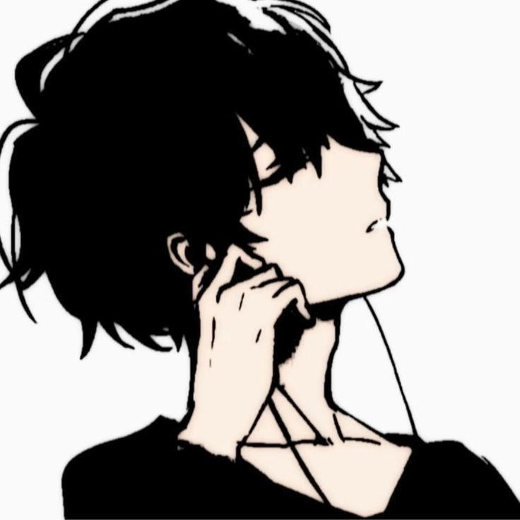

Spatial Rift
16 ans
Homme
Rowden
6.5 (God-Tier)
10.0 (God-Tier)
Spatial Rift
Yota est un adolescent réservé, souvent perçu comme distant ou froid par ceux qui ne le connaissent pas. Il observe beaucoup avant d'agir, préférant analyser les situations plutôt que de foncer tête baissée. Loyal envers ses rares amis, il peut se montrer sarcastique et protecteur. Son calme apparent cache une grande sensibilité et une colère difficile à maîtriser lorsqu'on s'en prend à ceux qu'il aime. Il a du mal à faire confiance et garde ses émotions pour lui, mais n'hésite pas à se sacrifier pour autrui.
Né dans une famille de Mid-Tiers, Yota se distingue dès l'enfance par une aura instable. À 7 ans, sa capacité se manifeste pour la première fois : il disparaît de sa chambre pour réapparaître dans le jardin, entouré d'un cercle lumineux bleu. Cet événement effraie ses proches qui le voient comme une anomalie.
Lors d'une altercation avec des camarades, il se téléporte sur 1 mètre pour échapper à un coup, laissant un portail violet. Bien que sauvé, il est davantage ostracisé et décide de cacher son pouvoir, s'entraînant en secret.
Lors d'un test de potentiel standardisé, il obtient un score de 3.5, surprenant tout le monde. Il comprend alors qu'il a été échangé à la naissance. Ce score transforme sa vie en fardeau, créant distance et méfiance.
Admis à Wellston avec un niveau de 4.2 (Elite-Tier), il est confronté à la hiérarchie brutale de l'école. Arlo le rejette immédiatement, tandis que Zeke l'encourage à assumer son pouvoir.
Lors d'un combat contre un High-Tier de niveau 5.8, il vit une percée décisive : téléportation sur 12 mètres et création de deux portails simultanés. Cet effort l'épuise complètement mais lui révèle son potentiel.
Yota est maintenant un High-Tier de niveau 5.5, respecté pour sa mobilité mais critiqué pour son attitude provocatrice. Il oscille entre confiance affichée et obsession pour débloquer son plein potentiel.
Description : À ce stade, Portal Gun est à peine fonctionnel. Yota peut se téléporter sur des distances infimes (quelques centimètres à 1 mètre maximum) en créant un portail unique, souvent instable et de couleur rose pâle. L'utilisation est involontaire ou mal contrôlée, et il ne peut ni déplacer d'objets ni rediriger d'attaques.
Limites : Téléportation imprécise, limitée à une très courte portée, et épuisante même pour un seul usage. Nécessite une concentration intense et une ligne de vue directe.
Description : Yota commence à contrôler sa téléportation, atteignant des distances de 2 à 3 mètres. Les portails, maintenant d'un rose plus vif, sont plus stables, mais il ne peut en créer qu'un seul à la fois (pas de portail de sortie distinct). Il peut déplacer de petits objets (comme un stylo) à travers un portail, mais pas encore des personnes ou des attaques.
Limites : Toujours limité par la ligne de vue et une fatigue rapide après 2-3 téléportations. Incapable de rediriger des attaques ou de maintenir un portail plus de 2 secondes.
Description : Yota peut se téléporter sur des distances de 5 à 7 mètres et créer deux portails (entrée et sortie) simultanément, bien que pour une durée limitée (5 secondes maximum). Les portails, parfois roses en plus du bleu et violet, peuvent déplacer des objets plus lourds (jusqu'à 10 kg) ou une personne à la fois. Il commence à rediriger des attaques simples (comme un projectile lent) en positionnant un portail devant lui.
Limites : Nécessite toujours une ligne de vue claire. Rediriger des attaques demande une précision extrême et échoue souvent contre des attaques rapides ou multiples. Fatigue après 5-6 téléportations.
Description : Yota peut se téléporter dans tout lieu depuis tout lieu et maintenir quatre portails actifs pendant 10 secondes (3 = 20s; 2=40s ; 1=80s). Les portails (bleus, violets ou roses) permettent de déplacer des objets jusqu'à 50 kg ou une personne à la fois avec plus de facilité. Il peut rediriger des attaques modérément rapides ou puissantes (comme des coups physiques ou des projectiles) en positionnant ses portails avec précision.
Limites : Toujours dépendant de la vue pour placer les portails. Rediriger des attaques complexes ou multiples reste difficile. Fatigue mentale après une trentaine de téléportations ou un usage prolongé des portails. Il doit avoir au minimum une photo de l'endroit cible.
Passif - Spatial Awareness : Connexion instinctive avec l'espace dans un rayon de 10 mètres. Yota perçoit les mouvements, distances et perturbations comme une "carte mentale". Immunité virtuelle aux illusions car il perçoit directement les perturbations spatiales.
Description : Yota peut se téléporter sur des distances presque infinies, basée sur la mémoire ou l'instinct après description vague. Il peut créer jusqu'à trick fois 3 portails simultanément, maintenus indéfiniment, pour déplacer des groupes de personnes ou des objets lourds (jusqu'à 2 tonnes). Rediriger des attaques devient presque instinctif, même contre des assauts multiples ou des capacités complexes.
Limites : Fatigue moindre mais présente après des téléportations massives ou un usage prolongé de portails multiples. Certaines capacités bloquant l'espace pourraient interférer. Au niveau 10 il est pépère.
Passif - Spatial Awareness (Divin) : Portée de 50 mètres à niveau 6.0, augmentant de 25 mètres par niveau jusqu'à 150 mètres ou plus au niveau 10. Perception absolue de tout : mouvements, formes, distances, fluctuations énergétiques, capacités, intentions hostiles, émotions fortes. Vision à travers tous obstacles. À partir du niveau 8.0, extension de conscience à des lieux éloignés (3-10 km). Au niveau 10, prévision des trajectoires futures (quelques secondes), détection de dimensions cachées et interaction avec elles.
Les relations vont de -100 à 100
Affiliation : Wellston
Type : Amitié approximative
+25
Affiliation : Aucune
Type : Admiration
0
Affiliation : Aucune
Type : Une pseudo-rivalité à sens unique
-25
Affiliation : Aucune
Type : Il l'aime pas
-100
Aura : Rose
Yeux : Rose
Portails : Rose (avec variations bleues et violettes selon le tier)
